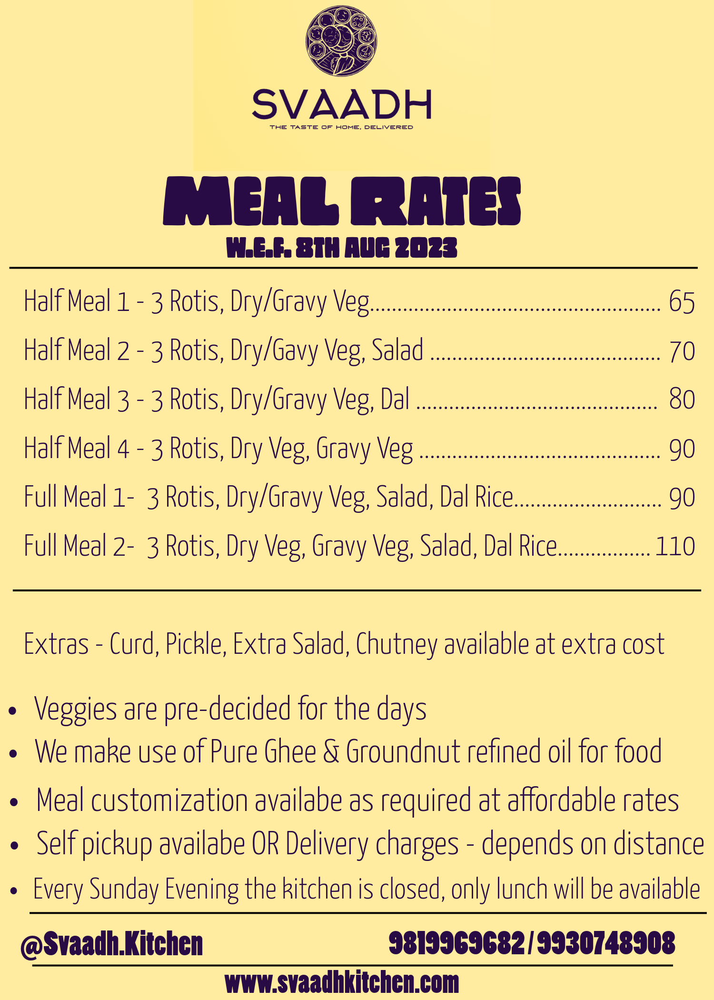

Choose from our daily selection of breakfast, lunch, and dinner options. All meals are prepared fresh with authentic homemade recipes.
Breakfast
Start your day with nutritious poha, upma, and idli

Lunch & Dinner
Wholesome thalis with dal, sabji, roti, and rice
About Svaadh Kitchen - Hadapsar's Trusted Homemade Food Service
Svaadh Kitchen is a home-based vegetarian cloud kitchen in Hadapsar, Pune, serving fresh and wholesome homemade meals for over 2.5 years. Our passion is to make healthy vegetarian food easily accessible and delicious for everyone in the community.
🍛 Fresh Daily
We source fresh ingredients daily and prepare meals in small batches
👵 Traditional Recipes
Authentic family recipes passed down through generations
🚚 Quick Delivery
Fast delivery to Magarpatta, Amanora, Bhosale Garden, and DP Road
To ensure we prepare your meal with the freshest ingredients, please place your orders before these cutoff times: Breakfast before 7:00 AM, Lunch before 9:30 AM, and Dinner before 5:00 PM. This helps us maintain quality and ensure timely delivery.
We currently deliver to select areas in Hadapsar: Bhosale Garden, DP Road, Magarpatta, and Amanora Township. We're focused on providing excellent service within these locations to ensure timely delivery and food quality.
We offer free delivery for orders above ₹100. For orders below ₹100, a nominal delivery charge of ₹10 applies to cover our delivery costs. This helps us keep our food prices affordable while maintaining quality service.
Yes! You can conveniently place weekly orders by selecting your preferred dates in advance. For assistance with weekly meal planning or special requirements, feel free to message us, and we'll be happy to help customize your meal schedule.
Absolutely! We specialize in bulk catering for offices, meetings, and special events. Please contact us with your requirements at least 2-3 days in advance, and we'll provide customized menu options and special pricing for your group.
You can cancel your order free of charge before the cutoff times: Breakfast before 7:00 AM, Lunch before 9:30 AM, and Dinner before 5:00 PM. After these times, cancellations will be chargeable as ingredients would have been prepared.
Yes, you can modify your order before the cutoff times (Breakfast: 7:00 AM, Lunch: 9:30 AM, Dinner: 5:00 PM). Simply message us with your changes, and we'll do our best to accommodate your request based on availability.
Our thalis offer complete, balanced meals with customizable portions: Dal (₹20), Dry/Curry Sabji Mini (₹20) or Full (₹45), Rice (₹10), Chapati (₹20) or Ghee Phulka (₹30), Salad (₹5), and Curd (₹10). Mix and match to create your perfect meal!
Yes, we provide authentic Jain food options prepared without onion and garlic. Simply mention "Jain" when placing your order, and we'll ensure your meal is prepared according to Jain dietary principles while maintaining the same delicious taste.
Absolutely! We cook in small batches using traditional family recipes passed down through generations. Every meal is prepared with the same care and attention as we would for our own family, using fresh ingredients and no artificial preservatives.
Yes, we source fresh ingredients daily from trusted local vendors. Our commitment to quality means we never use frozen or stored ingredients - everything is prepared fresh each morning to ensure you receive the most nutritious and flavorful meals.
Yes! We believe in personalized meals. You can customize your thali by choosing individual items, adjusting quantities, or requesting specific preparations. Just let us know your preferences when ordering, and we'll prepare your meal exactly how you like it.
Currently, we don't offer dedicated gluten-free options as our kitchen handles wheat-based ingredients. However, many of our dishes like rice, dal, and sabji are naturally gluten-free. Please inform us about your dietary restrictions, and we'll guide you accordingly.
Our food is prepared with regular homemade spice levels - flavorful but not overly spicy, suitable for all age groups. We use traditional Indian spices in balanced proportions. If you prefer milder or spicier versions, just let us know when ordering!
We accept UPI payments and Cash on Delivery for your convenience. Our UPI details are shared upon order confirmation. This ensures secure and hassle-free payment options for all our customers.
Yes! We value our regular customers: 10% discount on orders above ₹300, and 15% discount on orders above ₹450. Additionally, we occasionally offer special promotions and weekly combo deals - follow our updates for the latest offers!
No, there's no minimum order amount! Whether you want a single item or a full thali, we're happy to serve you. However, orders above ₹100 qualify for free delivery, making it more economical to order more items.
We follow strict hygiene protocols: daily fresh ingredients, sanitized kitchen environment, food-grade packaging, and regular quality checks. Our team follows proper food handling procedures, and we maintain temperature controls throughout preparation and delivery.
We absolutely welcome and value your feedback! Your suggestions help us improve. Please reach out to us via phone, WhatsApp, or our website chat with your thoughts, concerns, or compliments. We're always listening and committed to serving you better.
We've been proudly serving the Hadapsar community for 2.5 years. What started as a small home kitchen has grown into a trusted cloud kitchen, thanks to our wonderful customers who appreciate authentic homemade food.
Yes, we are fully licensed and certified. We hold all necessary food safety licenses and are GST registered, ensuring complete compliance with food regulations and quality standards. Your trust and safety are our top priorities.